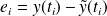
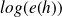

Ordre d'un schéma numérique
Rappels du cours
On va quantifier plus précisément l'efficacité des trois méthodes précédentes en reprenant le problème de Cauchy :
On note
 la solution exacte de cette équation différentielle que l'on va étudier sur
la solution exacte de cette équation différentielle que l'on va étudier sur
 .
.
La mise en œuvre d'une méthode numérique de résolution permet d'approcher la solution de cette équation pour un nombre fini de valeurs
pour
, où
,
 est le pas de la discrétisation adoptée.
est le pas de la discrétisation adoptée.
On note la solution approchée de cette équation différentielle.
L'erreur locale de consistance est définie par :

Si
tend vers 0 quand
tend vers 0, alors le schéma est convergent.
L'erreur globale de consistance est définie par :
Si
 tend vers 0 quand
tend vers 0, alors le schéma est consistant.
tend vers 0 quand
tend vers 0, alors le schéma est consistant.
Question
Dans le cas de la méthode d'Euler explicite, donner l'expression de
.
On cherche à résoudre le problème de Cauchy simple suivant :
La fonction eqdf sera donc triviale.
def eqdf(y):
return(y)
Et la solution exacte également.
def sol_exacte(t):
return( np.exp(t) )
Question
Écrire une fonction Euler_exp(y0, t0, tf, n, eqdf) qui renvoie le vecteur des
et le vecteur des
donnés par la méthode d'Euler explicite sur la plage
discrétisée en
 valeurs.
valeurs.
Voir cours.
def Euler_exp(y0, t0, tf, n, eqdf):
h = (tf - t0) / (n - 1)
T = [t0]
Y = [y0]
for i in range(1, n):
T.append(T[i - 1] + h)
Y.append(Y[i - 1] + h * eqdf(Y[i - 1], T[i - 1]))
return(Y, T)
Question
Écrire une fonction consistance(methode, y0, t0, tf, n, eqdf, sol_exacte) qui étant donné
renvoie
, methode en argument est la fonction de résolution numérique de l'équation différentielle.
L'erreur de consistance est la somme des erreurs locales de consistance. Il faut donc réinitialiser le calcul approché de
à partir de la solution exacte
 .
.
Voici une première solution :
def consistance1(n):
S = 0 #la somme
h = 1. / n #le pas
X = np.linspace(0, 1, n + 1)
Y = np.exp(X) #la solution exacte
for k in range(n):
S = S + abs(Y[k+1] - (Y[k] + h * F(X[k], Y[k])))
return(S)
Voici une autre solution qui permettra de faire le même calcul pour d'autres schémas numériques.
def consistance(methode, y0, t0, tf, n, eqdf, sol_exacte):
T = np.linspace(t0, tf, n)
Y_exacte = [sol_exacte(t) for t in T]
erreur_consistance = sum(abs(Y_exacte[k] - \
methode(Y_exacte[k - 1], T[k - 1], T[k], 2, eqdf)[0][1]) \
for k in range(1, n))
return(erreur_consistance)
Question
Tracer la courbe

en fonction de
pour
prenant les valeurs entières de 10 à 500.
VAL_N = list(range(10, 501))
ERR_CONS = [consistance(Euler_exp, 1, 0, 1, i, eqdf, sol_exacte) \
for i in VAL_N]
LOG_N = [np.log(n) for n in VAL_N]
LOG_ERR = [np.log(err) for err in ERR_CONS]
plt.figure('Consistance_Euler_exp', figsize = (8, 6))
plt.title("Evolution de l'erreur globale de consistance")
plt.plot(LOG_N, LOG_ERR)
plt.grid()
plt.xlabel(r'$n$')
plt.ylabel(r'Erreur de consistance $e(h)$')
plt.savefig('Ordre_Euler_exp.png')
plt.show()
Question
Quelle est la pente de cette droite ?
On peut avoir la pente de cette droite en utilisant les points extrémaux :
In [94]: (LOG_ERR[-1] - LOG_ERR[1]) / (LOG_N[-1] - LOG_N[1])
Out[94]: -1.0201319679037704
On trouve que la pente est d'environ −1.
Question
En déduire l'ordre de la méthode d'Euler.
Il reste `a expliquer les résultats obtenus. Pour une méthode d'ordre
,
 . C'est-`a-dire qu'il existe une constante
. C'est-`a-dire qu'il existe une constante
 telle que :
telle que :
ce qui donne :
Dans le tracé de en fonction de , la droite obtenue a une pente de −1 ainsi et le schéma numérique d'Euler est d'ordre 1.
À présent, nous allons nous intéresser aux ordres des autres méthodes vues en cours.
Question
Écrire une fonction Euler_imp(eqdf, t0, y0, T, n) qui renvoie le vecteur des
et le vecteur des
donnés par la méthode d'Euler implicite.
Voir cours. Ne pas oublier d'écrire les fonctions pour la méthode de Newton.
def derivee_point(x0, fonction, pas):
return( (fonction(x0 + pas) - fonction(x0 - pas)) / (2 * pas) )
def Newton(x0, fonction, eps, pas = 1e-8):
x = x0
compteur = 0 # permet de renvoyer le nombre d'itérations
while abs(fonction(x)) > eps:
compteur += 1
derx = derivee_point(x, fonction, pas)
if derx == 0:
x += pas
else:x -= fonction(x) / derx
return(x, compteur)
def Euler_imp(y0, t0, tf, n, eqdf):
h = (tf - t0) / (n - 1)
T = [t0]
Y = [y0]
C = [0] # compteur pour observer la complexité de Newton
for i in range(1, n):
T.append(T[i - 1] + h)
def f(x):
# Définition de la fonction à annuler par la méthode de Newtonreturn(x - Y[i - 1] - h * eqdf(x, T[i - 1]))
x, c = Newton(Y[i - 1], f, h * eqdf(Y[i - 1], T[i - 1]) / 10000)
Y.append(x)
C.append(c)
return(Y, T, C)
Question
Écrire une fonction Heun(eqdf, t0, y0, T, n) qui renvoie le vecteur des
et le vecteur des
donnés par la méthode de Heun.
Voir cours.
def Heun(y0, t0, tf, n, eqdf):
h = (tf - t0) / (n - 1)
T = [t0]
Y = [y0]
for i in range(1, n):
T.append(T[i - 1] + h)
Y.append(Y[i - 1] + (h / 2) * (eqdf(Y[i - 1], T[i - 1]) + \
eqdf(Y[i - 1] + h * eqdf(Y[i - 1], T[i - 1]), T[i])))
return(Y, T)
Question
Écrire une fonction Crank_Nocolson(eqdf, t0, y0, T, n) qui renvoie le vecteur des
et le vecteur des
donnés par la méthode de Crank-Nicoloson.
Voir cours.
def Crank_Nicolson(y0, t0, tf, n, eqdf):
h = (tf - t0) / (n - 1)
T = [t0]
Y = [y0]
for i in range(1, n):
T.append(T[i - 1] + h)
def f(x):
# Définition de la fonction à annuler par la méthode de Newtonreturn(x - Y[i - 1] - (h / 2) * \
(eqdf(Y[i - 1], T[i - 1]) + eqdf(x, T[i - 1])))
x = Newton(Y[i - 1], f, h * eqdf(Y[i - 1], T[i - 1]) / 10000)[0]
Y.append(x)
return(Y, T)
Question
En adaptant la définition de l'erreur de consistance, reprendre les questions précédentes afin de vérifier les ordres des méthodes d'Euler implicite, de Heun et de Crank-Nicolson.
La deuxième version de la fonction consistance est très pratique ici.
ERR_CONS_Imp = [consistance(Euler_imp, 1, 0, 1, i, eqdf, sol_exacte) \
for i in VAL_N]
ERR_CONS_Heun = [consistance(Heun, 1, 0, 1, i, eqdf, sol_exacte) \
for i in VAL_N]
ERR_CONS_CN = [consistance(Crank_Nicolson, 1, 0, 1, i, eqdf, sol_exacte) \
for i in VAL_N]
LOG_ERR_Imp = [np.log(err) for err in ERR_CONS_Imp]
LOG_ERR_Heun = [np.log(err) for err in ERR_CONS_Heun]
LOG_ERR_CN = [np.log(err) for err in ERR_CONS_CN]
plt.figure('Consistances_comparees', figsize = (8, 6))
plt.title("Evolution des erreurs globales de consistance")
plt.plot(LOG_N, LOG_ERR, color = 'black', label = 'Euler explicite')
plt.plot(LOG_N, LOG_ERR_Imp, color = 'red', label = 'Euler implicite')
plt.plot(LOG_N, LOG_ERR_Heun, color = 'blue', label = 'Heun')
plt.plot(LOG_N, LOG_ERR_CN, color = 'green', label = 'Crank-Nicolson')
plt.grid()
plt.xlabel(r'$n$')
plt.ylabel(r'Erreur de consistance $e(h)$')
plt.legend(loc = 'upper right')
plt.savefig('Ordres_compares.png')
plt.show()
Voici les courbes obtenues.
La pente du schéma d'Euler implicite est encore de -1, le schéma est donc d'ordre 1.
Celles des schémas de Heun et de Crank-Nicolson sont de -2, ce sont donc des schémas d'ordre 2.